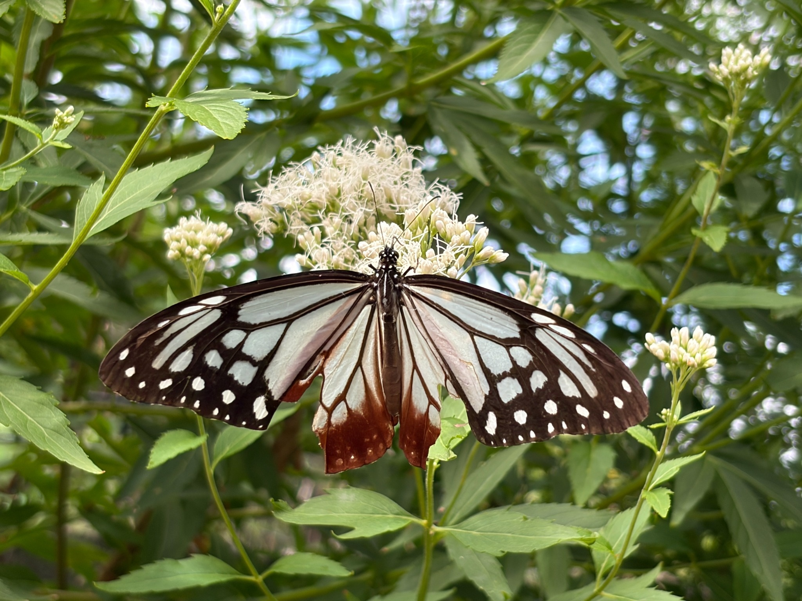
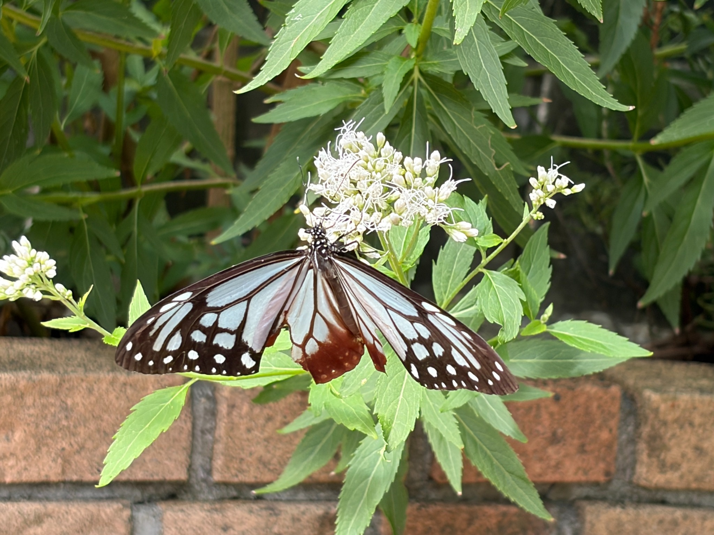
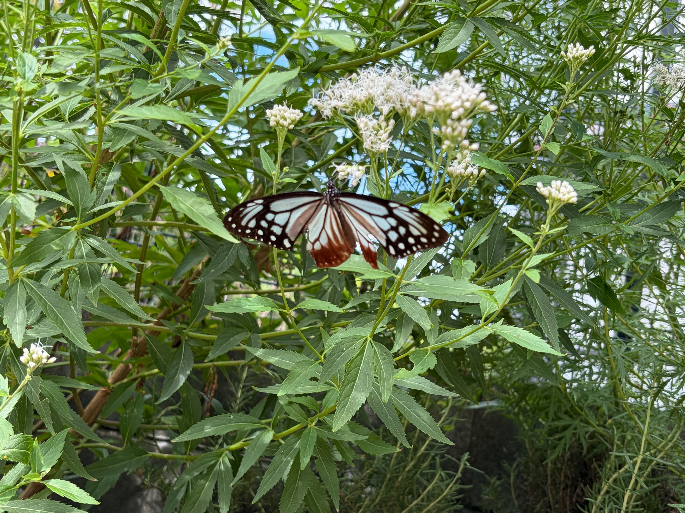
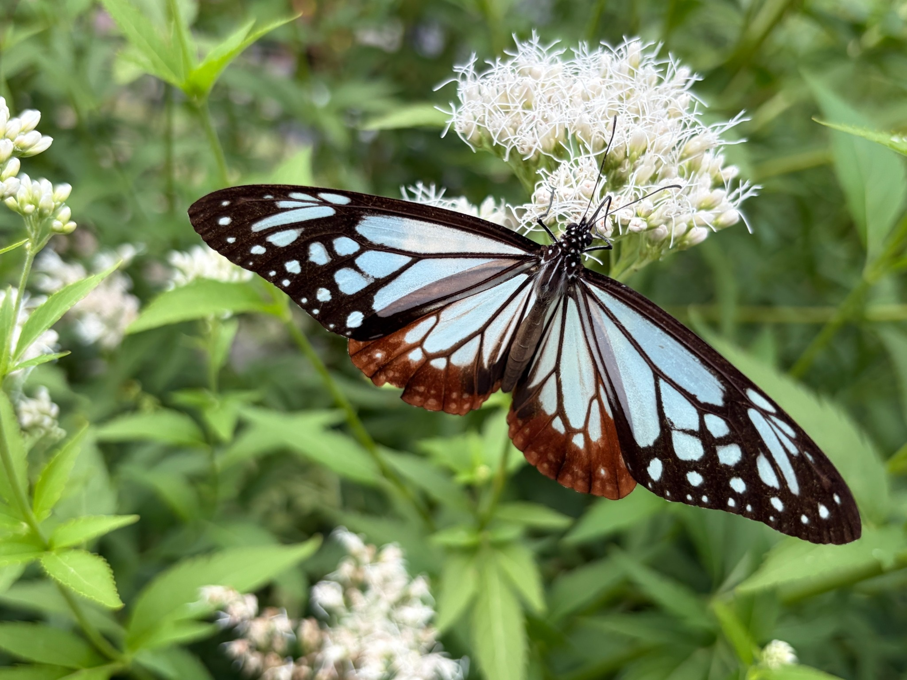
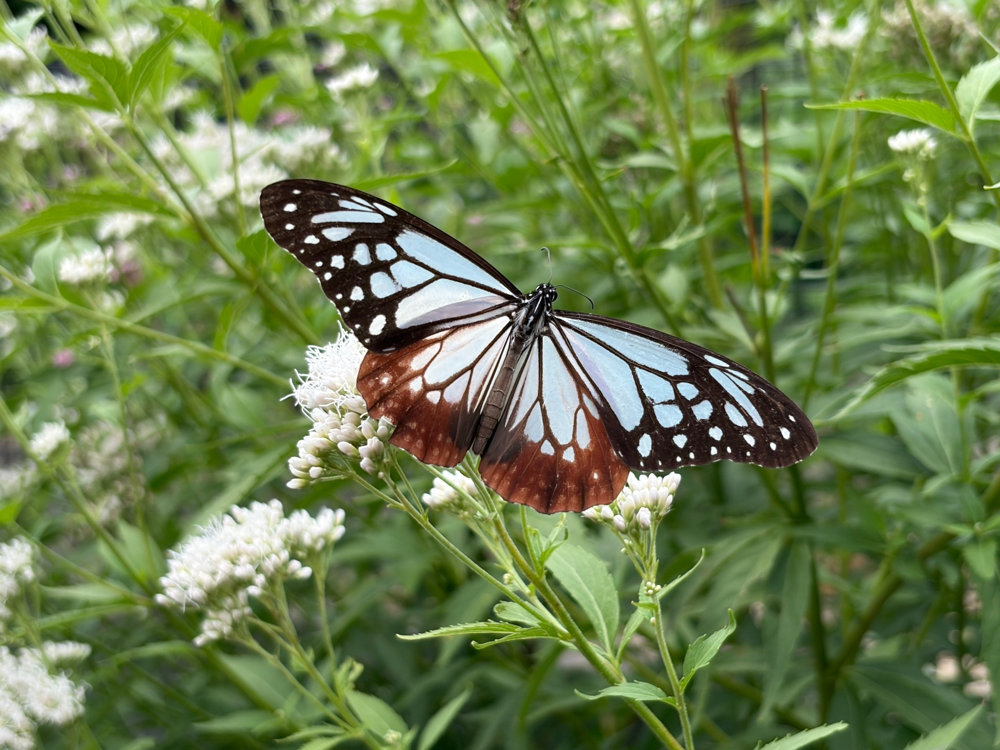
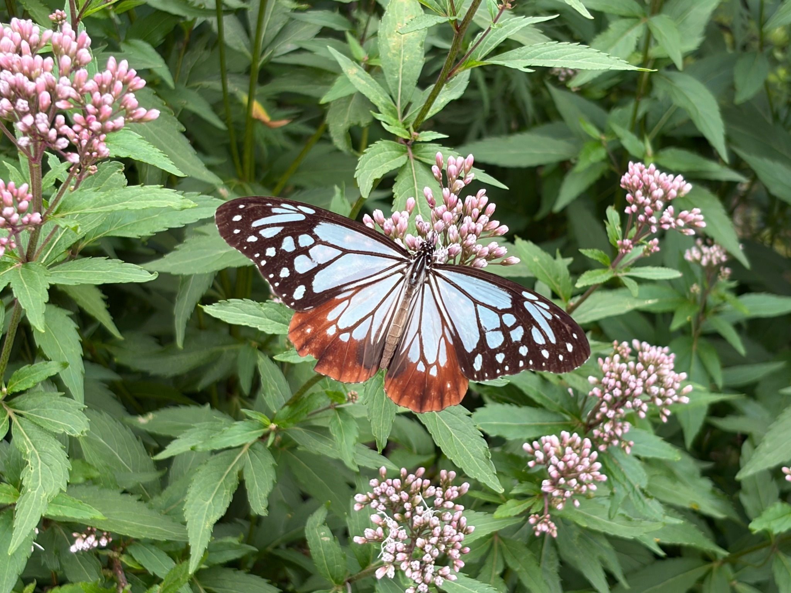
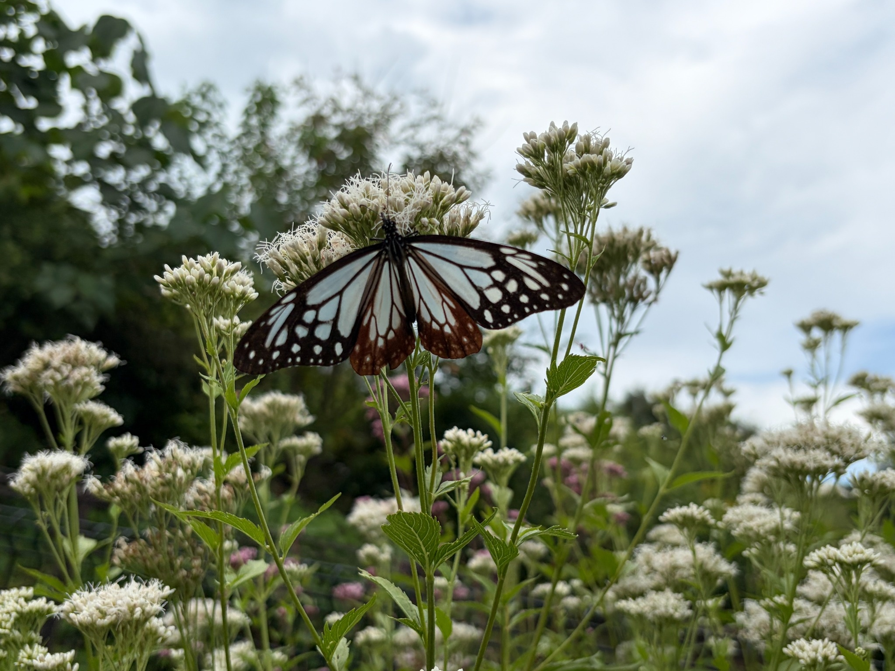
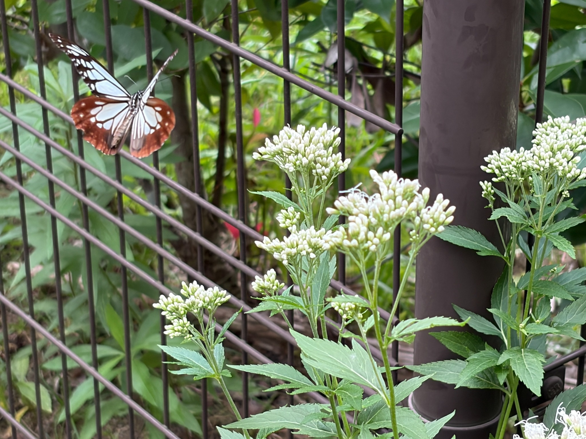
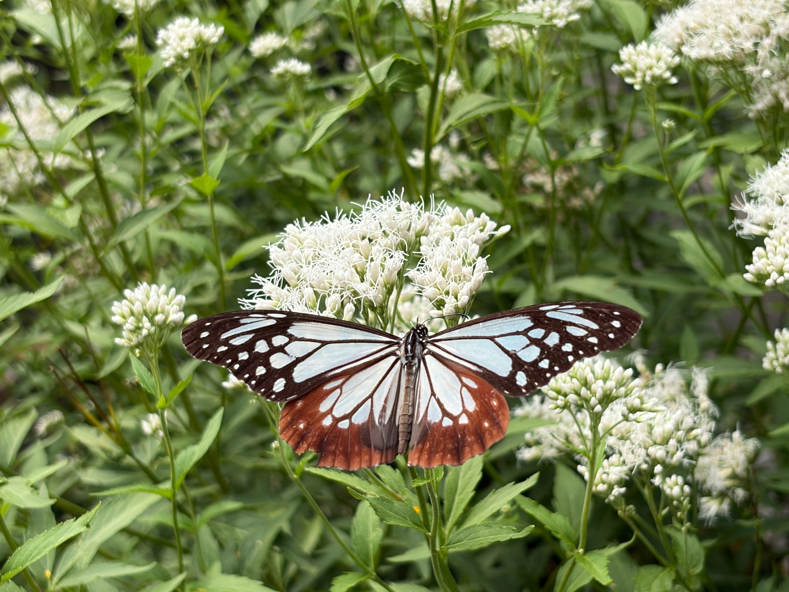
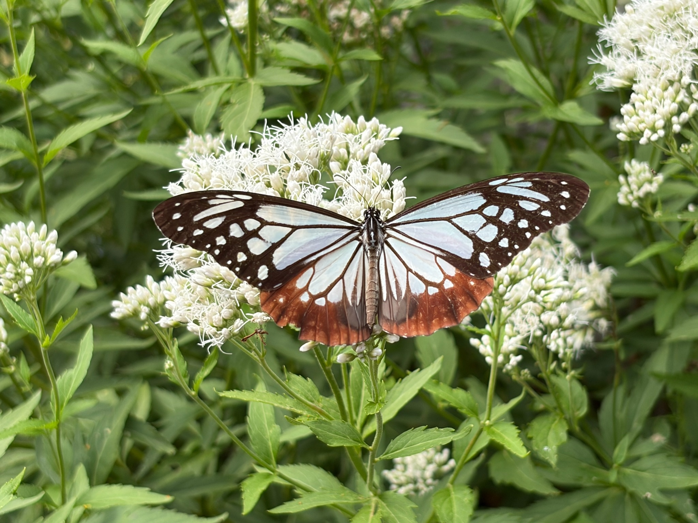

2026/10/12 アサギマダラ2匹が飛来。待ち続けた蝶を、じっくり観察できました。
アサギマダラに来てもらいたいと思い、フジバカマを育てながら、その姿を見られる日を楽しみにしていました。10月12日、10：30頃に2匹のアサギマダラが飛来しました。
これまで花を訪れる蝶や虫を眺めながら、アサギマダラはいつ来てくれるのだろうと待っていました。それだけに、実際に2匹が訪れ、花にとまって蜜を吸う姿を見られたことは、とてもうれしい出来事でした。
2匹を見比べると、大きさと翅の状態に違いがありました。一方は大きく、翅に欠けがある個体。もう一方は小さく、翅がきれいな個体でした。同じアサギマダラでも、それぞれに特徴があり、観察する楽しみがありました。
大きくて翅に欠けがある個体は、1時間半ほど滞在
大きい個体は、翅を広げると存在感がありました。花にとまった姿を近くで見ると、翅の一部に欠けがあることが分かります。写真にも、その様子を残すことができました。
翅に欠けがあっても、花にとまって過ごす姿を見ることができました。この個体は、飛来してから1時間半ほど滞在していました。
欠けた翅を見ると、ここへ来るまでにどのような時間を過ごしてきたのだろうと、つい考えてしまいます。ただ、いつ、どこで、何が原因で欠けたのかは分かりません。長い移動の途中で傷んだのか、それ以外の出来事によるものなのか、今回の観察だけでは判断できません。
それでも、翅の欠けも含めて、この個体ならではの姿です。きれいな模様だけでなく、その特徴まで写真に残せたことが、今回の記録の一つになりました。



小さくて翅がきれいな個体は、16：30まで滞在
もう一方の小さい個体は、翅がきれいで、大きい個体とは違った印象でした。翅を広げた姿や、花のそばを飛ぶ瞬間など、いろいろな場面を撮影できました。
この個体は、10：30頃の飛来から16：30まで、約6時間にわたって滞在していました。ずっとフジバカマの花にとまり、蜜を吸っている姿が特に印象に残りました。
少しだけ立ち寄って飛び去るのではなく、長い時間、花で吸蜜していました。待っていた蝶をこれほどじっくり観察できたことがうれしく、花にとまる姿を何度も眺めていました。
大きい個体の滞在は1時間半ほど、小さい個体は約6時間。同じ頃に飛来した2匹でも、滞在時間には大きな違いがありました。それぞれの状態や、その後の行動の違いが関係していたのかもしれませんが、理由までは分かりません。今回は、実際に見られた違いとして記録しておきたいと思います。


吸蜜の中心は、満開の白フジバカマ原種系
この日は、白フジバカマ原種系が満開の状態でした。アサギマダラの吸蜜も、主にこの白フジバカマ原種系で見られました。
フジバカマ原種系でも蜜を吸う姿を確認できましたが、長く観察していると、吸蜜の中心になっていたのは満開の白フジバカマ原種系でした。小さい個体がフジバカマ原種系の花で吸蜜している姿も、写真に残しています。





今回の様子を見て、花の咲き具合が、吸蜜する場所の選び方に関係していたのではないかと感じました。満開の白フジバカマ原種系には、多くの花が開いていました。蝶にとって、吸蜜できる花を見つけやすい状態だったのかもしれません。
ただし、今回の観察だけで「白い花を好む」「白フジバカマ原種系の方が蜜が多い」とまでは言えません。花の色や種類による違いなのか、開花の進み具合によるものなのかは、分けて考える必要があると思います。
今回、はっきり確認できたのは、満開の白フジバカマ原種系が吸蜜の中心になり、フジバカマ原種系でも吸蜜していたということです。これからも花の咲き具合と、蝶が訪れる様子を一緒に見ていくと、違いが分かってくるかもしれません。
花には、ミツバチやアブ、小さなハナムグリも集まっていました
フジバカマの花を訪れていたのは、アサギマダラだけではありません。ミツバチ、アブ、小さなハナムグリも、合わせて50匹ほどが蜜を吸い、花の周りを飛び回っていました。
多くの虫が集まる花の中で、アサギマダラも長く吸蜜していました。花が咲いたことで、いろいろな虫が訪れ、それぞれに花を利用している様子を見ることができました。
これほど多くの虫が訪れていることも、今回の印象的な光景です。育ててきたフジバカマが、蝶だけでなく、さまざまな虫の吸蜜場所になっていることを、目の前で感じられました。
2匹の違いから、考えたこと
今回の2匹は、体の大きさ、翅の状態、滞在時間に違いがありました。
大きい個体には翅の欠けがあり、小さい個体は翅がきれいでした。見た目の違いから、それぞれが過ごしてきた時間にも違いがあるのだろうかと考えました。
ただ、翅がきれいだから若い、欠けがあるから年を重ねている、と単純に決めることはできません。また、大きさだけで性別を判断することも、今回は控えておきたいと思います。写真と観察で分かることを大切にしながら、分からない部分は分からないまま残しておくのがよいと感じました。
小さい個体が約6時間にわたって滞在し、長く蜜を吸っていたことからは、この花々が吸蜜場所として利用されていたことがよく分かります。移動に使う力を補っていたのかもしれないと思うと、フジバカマを育ててきたことが、蝶の役に立っているように感じられました。
待っていたアサギマダラを、写真と動画に残せた一日
フジバカマを育てながら楽しみにしていた、アサギマダラの飛来。その姿を自分の目で確認し、2匹それぞれの特徴や、花で蜜を吸う様子を記録できました。
特に、小さい個体が16：30まで滞在し、長く吸蜜していた姿は忘れられません。満開の白フジバカマ原種系にとまる姿を見ながら、花を育ててきてよかったと感じました。
今回は、大きくて翅に欠けがある個体を3枚、小さくて翅がきれいな個体を7枚の写真に残しました。写真だけでなく、動画も2本撮影できました。動画はこの記録の最後に掲載し、そのときの様子も残しておきたいと思います。
これからも、フジバカマの開花とともに、アサギマダラが訪れる様子を楽しみに観察していきたいと思います。